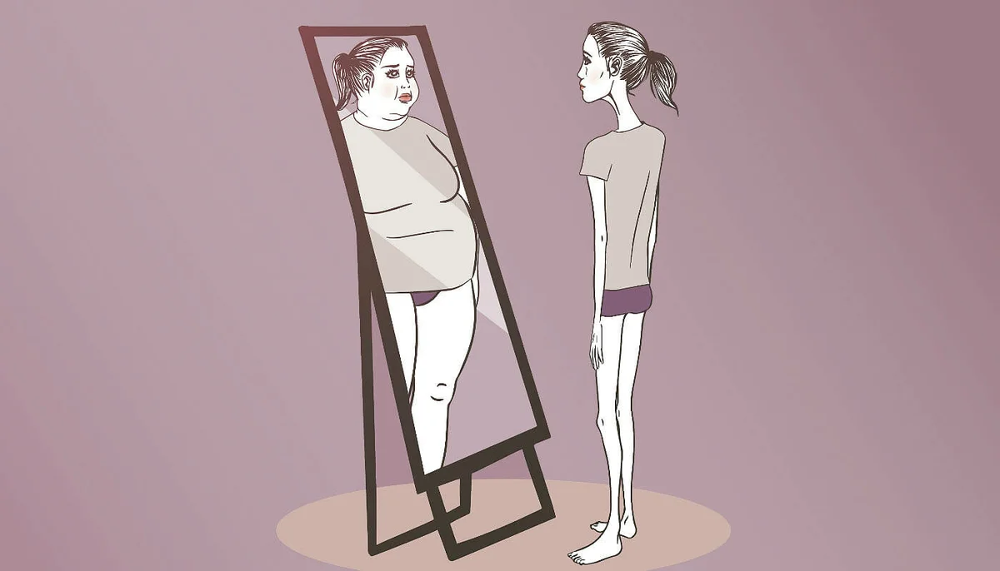

РАССТРОЙСТВА ПИЩЕВОГО ПОВЕДЕНИЯ
Хочется поговорить об одной из важных тем здорового образа жизни – расстройствах пищевого поведения (РПП). О том, что они из себя представляют, как проявляются и каких привычек необходимо избегать, чтобы не обрести серьезные заболевания. Важно понимать, что речь в данной статье пойдет о базовых, обобщенных критериях. Поэтому если вы подозреваете у себя наличие какого-либо из описанных заболеваний, необходимо обратиться к врачу и пройти соответствующее лечение. Далее пойдет рассказ лишь о первичных признаках и том, как не усугубить ситуацию.
Расстройства пищевого поведения представляют из себя психологически обусловленные заболевания, связанные с приемом пищи. То есть в основе лежат чувства и эмоции, которые переживаются нездоровым образом и влекут за собой возникновение психических расстройств.
ОСНОВНЫЕ ВИДЫ РПП
Анорексия – заболевание, заключающееся в полном отсутствии аппетита при объективной потребности организма в питании. Обычно характеризуется значительным снижением веса, вызываемым и поддерживаемым самим человеком.
Булимия – заболевание, характеризующееся потерей контроля над количеством употребляемой пищи, переедание, затем испытывание чувства вины и порицание себя за содеянное, и попытки “исправить” положение путем вызывания рвоты, диеты, голодания.
Компульсивное переедание – постоянное и систематическое чрезмерное употребление пищи, также испытывание чувства вины и порицания себя, но отсутствие попыток что-либо с этим сделать.
Существует еще множество различных расстройств и их комбинации. При этом каждое из них влечет за собой серьезные последствия:
- заболевания и нарушения в работе пищеварительной системы;
- повреждения органов пищеварения;
- головокружение, обмороки, боли;
- мышечные боли;
- появление сахарного диабета;
- депрессия, апатия, психические заболевания;
- сокращение длительности жизни.
Чтобы не провоцировать развитие таких заболеваний в своей жизни, важно на ранней стадии заметить и искоренить следующие привычки.
ИСПОЛЬЗОВАНИЕ ПИЩИ ДЛЯ ПРОЖИВАНИЯ СВОИХ ЭМОЦИЙ И ЧУВСТВ
Эта привычка, к сожалению, развивается у многих с детства, когда за хорошее поведение вас награждали сладостями или утешали пищей тогда, когда вы расстроены. Во взрослом состоянии это проявляется в таком же виде. Когда в жизни происходит радостное событие, когда вы хотите похвалить себя за что-то – вы покупаете себе сладости или позволяете съесть больше, чем обычно. Вгрустные моменты жизни, когда вам плохо, обидно, вы испытываете стресс – вы предпочитаете “заесть” эмоции вкусной едой, успокоить себя таким образом. Все это первые признаки нездорового поведения. Если вы заметили их за собой, остановитесь. Придумайте другие способы справляться с чувствами, которые не связаны с едой.

НЕНАВИСТЬ К СЕБЕ ЗА ОТХОД ОТ ПРИВЫЧНОГО ПЛАНА ПИТАНИЯ
Переедания, срывы и просто небольшие отклонения от привычной системы питания вызывают у вас негативные чувства. Вы корите и ругаете себя за совершенную ошибку. Некоторые наказывают себя более строгой диетой или повышенной физической активностью. Самокритика и чувство вины разрушающе действуют на нашу психику, они не мотивируют улучшить себя, а наоборот вгоняют в депрессию и понижают вашу самооценку. Поэтому необходимо отказаться от таких привычек и воспринимать свои ошибки как нормальное состояние, ведь они бывают у всех. Намного полезнее похвалить себя за то, что вы их заметили и собираетесь предпринять действия по их исправлению.
СТРЕМЛЕНИЕ ПРИВЕСТИ СЕБЯ В ФОРМУ К ОПРЕДЕЛЕННОМУ СОБЫТИЮ В ЖИЗНИ
Вы вспоминаете о том, что вас не устраивает ваше тело и вы хотите его изменить только тогда, когда в жизни приближается значимое событие – какой-либо праздник, лето, встреча со значимым человеком и так далее. Вы начинаете придерживаться диеты или заниматься спортом, когда вас побуждают к этому внешние факторы. Вы думаете о своей внешности только лишь с точки зрения оценки окружающих, а не исходя из своих внутренних ощущений. Обычно даже если вам удается добиться хорошей формы к назначенному дню, за эти следует срыв, переедание, опустошение и возврат в первоначальную точку. Чтобы этого не происходило, осознайте, каким телом хотите обладать именно вы и зачем вам это нужно.
КУЛЬТ ВНЕШНОСТИ И СТРЕМЛЕНИЕ К ИДЕАЛУ
Вы считаете внешность – главным параметром жизни. Вы полагаете, что от нее зависит абсолютно все, что с вами происходит. Вы думаете, что имея идеальную фигуру, вы решите таким образом все свои проблемы. И вы верите, что идеального тела возможно достичь. Правда в том, что внешность – далеко не самый важный критерий в нашей жизни. Например, ваше здоровье куда важнее. Кроме того, идеал, как известно, недостижим, важен именно процесс самосовершенствования, но не конечная цель. Красивое тело не сделает вас счастливыми. Таковыми вы можете сделать себя только сами, изнутри и прямо сейчас. Путем работы над своим психологическим состояние и выстраивания здоровых отношений с пищей.